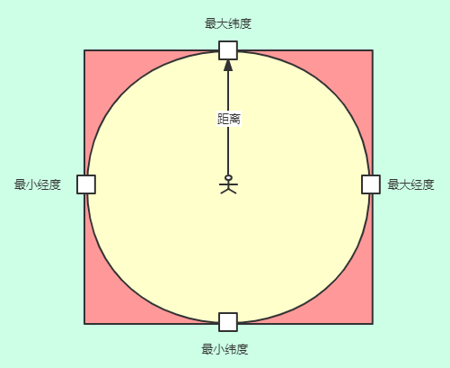

在我们平时使用的许多app中有附近的人这一功能，像微信、qq附近的人，哈罗、街兔附近的车辆。这些功能就在我们日常生活中出现。
像类似于附近的人这一类业务，在Java中是如何实现的呢？
本文就简单介绍下目前的几种解决方案，并提供简单的示例代码
注: 本文仅涉及附近的人这一业务场景的解决方案讨论，并未涉及到相关的技术细节和方案优化，各位看官可以放心阅读。
目前业内的解决方案大都依据geoHash展开，考虑到不同的数据量以及不同的业务场景，本文主要讨论以下3种方案
外接矩形的实现方式是相对较为简单的一种方式。
假设给定某用户的位置坐标, 求在该用户指定范围内的其他用户信息
此时可以将位置信息和距离范围简化成平面几何题来求解
以当前用户为圆心，以给定距离为半径画圆，那么在这个圆内的所有用户信息就是符合结果的信息，直接检索圆内的用户坐标难以实现，我们可以通过获取这个圆的外接正方形。
通过外接正方形，获取经度和纬度的最大最小值，根据最大最小值可以将坐标在正方形内的用户信息搜索出来。
此时在外接正方形中不属于圆形区域的部分就属于多余的部分，这部分用户信息距离当前用户（圆心）的距离必定是大于给定半径的，故可以将其剔除，最终获得指定范围内的附近的人

这里只贴出部分核心代码，详细的代码可见源码：NearBySearch
在实现附近的人搜索中，需要根据位置经纬度点，进行一些距离和范围的计算，比如求球面外接正方形的坐标点，球面两坐标点的距离等，可以引入Spatial4j库。
<dependency>
<groupId>com.spatial4j</groupId>
<artifactId>spatial4j</artifactId>
<version>0.5</version>
</dependency>userCREATE TABLE `user` (
`id` int(11) NOT NULL AUTO_INCREMENT,
`name` varchar(255) DEFAULT NULL COMMENT '名称',
`longitude` double DEFAULT NULL COMMENT '经度',
`latitude` double DEFAULT NULL COMMENT '纬度',
`create_time` datetime DEFAULT NULL ON UPDATE CURRENT_TIMESTAMP COMMENT '创建时间',
PRIMARY KEY (`id`)
) ENGINE=InnoDB DEFAULT CHARSET=utf8mb4; private SpatialContext spatialContext = SpatialContext.GEO;
/**
* 获取附近x米的人
*
* @param distance 距离范围 单位km
* @param userLng 当前经度
* @param userLat 当前纬度
* @return json
*/
@GetMapping("/nearby")
public String nearBySearch(@RequestParam("distance") double distance,
@RequestParam("userLng") double userLng,
@RequestParam("userLat") double userLat) {
//1.获取外接正方形
Rectangle rectangle = getRectangle(distance, userLng, userLat);
//2.获取位置在正方形内的所有用户
List<User> users = userMapper.selectUser(rectangle.getMinX(), rectangle.getMaxX(), rectangle.getMinY(), rectangle.getMaxY());
//3.剔除半径超过指定距离的多余用户
users = users.stream()
.filter(a -> getDistance(a.getLongitude(), a.getLatitude(), userLng, userLat) <= distance)
.collect(Collectors.toList());
return JSON.toJSONString(users);
}
private Rectangle getRectangle(double distance, double userLng, double userLat) {
return spatialContext.getDistCalc()
.calcBoxByDistFromPt(spatialContext.makePoint(userLng, userLat),
distance * DistanceUtils.KM_TO_DEG, spatialContext, null);
} <select id="selectUser" resultMap="BaseResultMap">
SELECT * FROM user
WHERE 1=1
and (longitude BETWEEN ${minlng} AND ${maxlng})
and (latitude BETWEEN ${minlat} AND ${maxlat})
</select>前面介绍了通过Mysql存储用户的信息和gps坐标，通过计算外接正方形的坐标点来粗略筛选结果集，最终剔除超过范围的用户。
而现在要提到的
Mysql+geohash方案，同样是以Mysql为基础，只不过引入了geohash算法，同时在查询上借助索引。
geohash被广泛应用于位置搜索类的业务中，本文不对它进行展开说明，有兴趣的同学可以看一下这篇博客:[GeoHash核心原理解析]，这里简单对它做一个描述：
GeoHash算法将经纬度坐标点编码成一个字符串,距离越近的坐标，转换后的geohash字符串越相似,例如下表数据：
| 用户 | 经纬度 | Geohash字符串 |
|---|---|---|
| 小明 | 116.402843,39.999375 | wx4g8c9v |
| 小华 | 116.3967,39.99932 | wx4g89tk |
| 小张 | 116.40382,39.918118 | wx4g0ffe |
其中根据经纬度计算得到的geohash字符串，不同精度（字符串长度）代表了不同的距离误差。具体的不同精度的距离误差可参考下表：
| geohash码长度 | 宽度 | 高度 |
|---|---|---|
| 1 | 5,009.4km | 4,992.6km |
| 2 | 1,252.3km | 624.1km |
| 3 | 156.5km | 156km |
| 4 | 39.1km | 19.5km |
| 5 | 4.9km | 4.9km |
| 6 | 1.2km | 609.4m |
| 7 | 152.9m | 152.4m |
| 8 | 38.2m | 19m |
| 9 | 4.8m | 4.8m |
| 10 | 1.2m | 59.5cm |
| 11 | 14.9cm | 14.9cm |
| 12 | 3.7cm | 1.9cm |
使用Mysql存储用户信息，其中包括用户的经纬度信息和geohash字符串。
WHERE geohash Like 'geohashcode%'来查询数据集这里只贴出部分核心代码，详细的代码可见源码：NearBySearch
同样的要涉及到坐标点的计算和geohash的计算，开始之前先导入spatial4j
user_geohash,给geohash码添加索引CREATE TABLE `user_geohash` (
`id` int(11) NOT NULL AUTO_INCREMENT,
`name` varchar(255) DEFAULT NULL COMMENT '名称',
`longitude` double DEFAULT NULL COMMENT '经度',
`latitude` double DEFAULT NULL COMMENT '纬度',
`geo_code` varchar(64) DEFAULT NULL COMMENT '经纬度所计算的geohash码',
`create_time` datetime DEFAULT NULL ON UPDATE CURRENT_TIMESTAMP COMMENT '创建时间',
PRIMARY KEY (`id`),
KEY `index_geo_hash` (`geo_code`)
) ENGINE=InnoDB DEFAULT CHARSET=utf8mb4; private SpatialContext spatialContext = SpatialContext.GEO;
/***
* 添加用户
* @return
*/
@PostMapping("/addUser")
public boolean add(@RequestBody UserGeohash user) {
//默认精度12位
String geoHashCode = GeohashUtils.encodeLatLon(user.getLatitude(),user.getLongitude());
return userGeohashService.save(user.setGeoCode(geoHashCode).setCreateTime(LocalDateTime.now()));
}
/**
* 获取附近指定范围的人
*
* @param distance 距离范围 单位km
* @param len geoHash的精度
* @param userLng 当前经度
* @param userLat 当前纬度
* @return json
*/
@GetMapping("/nearby")
public String nearBySearch(@RequestParam("distance") double distance,
@RequestParam("len") int len,
@RequestParam("userLng") double userLng,
@RequestParam("userLat") double userLat) {
//1.根据要求的范围，确定geoHash码的精度，获取到当前用户坐标的geoHash码
String geoHashCode = GeohashUtils.encodeLatLon(userLat, userLng, len);
QueryWrapper<UserGeohash> queryWrapper = new QueryWrapper<UserGeohash>()
.likeRight("geo_code",geoHashCode);
//2.匹配指定精度的geoHash码
List<UserGeohash> users = userGeohashService.list(queryWrapper);
//3.过滤超出距离的
users = users.stream()
.filter(a ->getDistance(a.getLongitude(),a.getLatitude(),userLng,userLat)<= distance)
.collect(Collectors.toList());
return JSON.toJSONString(users);
}
/***
* 球面中，两点间的距离
* @param longitude 经度1
* @param latitude 纬度1
* @param userLng 经度2
* @param userLat 纬度2
* @return 返回距离，单位km
*/
private double getDistance(Double longitude, Double latitude, double userLng, double userLat) {
return spatialContext.calcDistance(spatialContext.makePoint(userLng, userLat),
spatialContext.makePoint(longitude, latitude)) * DistanceUtils.DEG_TO_KM;
}通过上面几步，就可以实现这一业务场景，不仅提高了查询效率，并且保护了用户的隐私，不对外暴露坐标位置。并且对于同一位置的频繁请求，如果是同一个geohash字符串，可以加上缓存，减缓数据库的压力。
geohash算法将地图分为一个个矩形，对每个矩形进行编码，得到geohash码，但是当前点与待搜索点距离很近但是恰好在两个区域，用上面的方法则就不适用了。
解决这一问题的办法：获取当前点所在区域附近的8个区域的geohash码，一并进行筛选。
如何求解附近的8个区域的geohash码可参考Geohash求当前区域周围8个区域编码的一种思路
了解了思路，这里我们可以使用第三方开源库ch.hsr.geohash来计算，通过maven引入
<dependency>
<groupId>ch.hsr</groupId>
<artifactId>geohash</artifactId>
<version>1.0.10</version>
</dependency>对上一章节的nearBySearch方法进行修改如下：
/**
* 获取附近指定范围的人
*
* @param distance 距离范围 单位km
* @param len geoHash的精度
* @param userLng 当前经度
* @param userLat 当前纬度
* @return json
*/
@GetMapping("/nearby")
public String nearBySearch(@RequestParam("distance") double distance,
@RequestParam("len") int len,
@RequestParam("userLng") double userLng,
@RequestParam("userLat") double userLat) {
//1.根据要求的范围，确定geoHash码的精度，获取到当前用户坐标的geoHash码
GeoHash geoHash = GeoHash.withCharacterPrecision(userLat, userLng, len);
//2.获取到用户周边8个方位的geoHash码
GeoHash[] adjacent = geoHash.getAdjacent();
QueryWrapper<UserGeohash> queryWrapper = new QueryWrapper<UserGeohash>()
.likeRight("geo_code",geoHash.toBase32());
Stream.of(adjacent).forEach(a -> queryWrapper.or().likeRight("geo_code",a.toBase32()));
//3.匹配指定精度的geoHash码
List<UserGeohash> users = userGeohashService.list(queryWrapper);
//4.过滤超出距离的
users = users.stream()
.filter(a ->getDistance(a.getLongitude(),a.getLatitude(),userLng,userLat)<= distance)
.collect(Collectors.toList());
return JSON.toJSONString(users);
}
基于前两种方案，我们可以发现gps这类数据属于读多写少的情况，如果使用redis来实现附近的人，想必效率会大大提高。
Redis提供6条命令，来帮助我们我完成大部分业务的需求，关于Redis提供的geohash操作命令介绍可阅读博客：Redis 到底是怎么实现“附近的人”这个功能的呢？
本文主要介绍下，我们示例代码中用到的两个命令：
GEOADD key longitude latitude member：将给定的空间元素（纬度、经度、名字）添加到指定的键里面
GEORADIUS key longitude latitude radius m|km|ft|mi [WITHCOORD] [WITHDIST] [WITHHASH] [ASC|DESC] [COUNT count]: 根据给定地理位置坐标获取指定范围内的地理位置集合(附近的人)
GEOADD），redis会将经纬度参数值转换为52位的geohash码，GEORADIUS命令，获取指定坐标点某一范围内的数据这里只贴出部分核心代码，详细的代码可见源码：NearBySearch
@Autowired
private RedisTemplate<String, Object> redisTemplate;
//GEO相关命令用到的KEY
private final static String KEY = "user_info";
public boolean save(User user) {
Long flag = redisTemplate.opsForGeo().add(KEY, new RedisGeoCommands.GeoLocation<>(
user.getName(),
new Point(user.getLongitude(), user.getLatitude()))
);
return flag != null && flag > 0;
}
/**
* 根据当前位置获取附近指定范围内的用户
* @param distance 指定范围 单位km ，可根据{@link org.springframework.data.geo.Metrics} 进行设置
* @param userLng 用户经度
* @param userLat 用户纬度
* @return
*/
public String nearBySearch(double distance, double userLng, double userLat) {
List<User> users = new ArrayList<>();
// 1.GEORADIUS获取附近范围内的信息
GeoResults<RedisGeoCommands.GeoLocation<Object>> reslut =
redisTemplate.opsForGeo().radius(KEY,
new Circle(new Point(userLng, userLat), new Distance(distance, Metrics.KILOMETERS)),
RedisGeoCommands.GeoRadiusCommandArgs.newGeoRadiusArgs()
.includeDistance()
.includeCoordinates().sortAscending());
//2.收集信息，存入list
List<GeoResult<RedisGeoCommands.GeoLocation<Object>>> content = reslut.getContent();
//3.过滤掉超过距离的数据
content.forEach(a-> users.add(
new User().setDistance(a.getDistance().getValue())
.setLatitude(a.getContent().getPoint().getX())
.setLongitude(a.getContent().getPoint().getY())));
return JSON.toJSONString(users);
}| 方案 | 优势 | 缺点 |
|---|---|---|
| Mysql外接正方形 | 逻辑清晰，实现简单，支持多条件筛选 | 效率较低，不适合大数据量，不支持按距离排序 |
| Mysql+Geohash | 借助索引有效提高效率，支持多条件筛选 | 不支持按距离排序，存在数据库瓶颈 |
| Redis+Geohash | 效率高，集成便捷，支持距离排序 | 不适合复杂对象存储，不支持多条件查询 |
总结以上三种方案，各有优劣，在不同的业务场景下，可选择不同的方案来实现。
当然目前附近的人的解决方案并不仅仅这三种，以上权当是这一功能的入门引子，希望对大家有所帮助。
本文的三种方案均有源码提供，源码地址